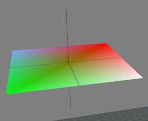
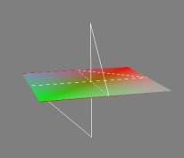

При добавлении таких объектов в ТЕС КС:
- Создать ИДЕ объекта требуемого типа.
- Подключить временную модель, т.е. ниф не содержащий линий.
- Перед сеансом игры, заменить ниф файл на желаемый, т.е. с линиями.
К сожалению, патчей для редактора еще не выходило (2020)
Поправочка, в 2025ом, МВСЕ начало патчить и Тес КС, отчего niLines, как и ряд других объектов стали отображаться правильно.
Примечания.
- Возможно использовании цвета и прозрачности на вертексах линий. Аналогично
niTriShapeData.
- Возможно наложение
ЮВ контроллера, что в принципе позволят создавать анимации некоего рода.
- Возможно создание простых линий непосредственно в нифскопе, сложные объекты можно создавать через Блендер.
- Однако, даже простые модели могут приводит к вылету редактора и игры!
- Следует использовать
СкенеВиювер для просмотра результата.
- Плагины к 3д МАХу (по видимости) не поддерживают экспорт этого объекта в ниф файлы.
NiLines можно видеть по SSG.
Т.е. если вызвать в редакторе по F10
SSG и выбрать модель, то в его составе можно будет увидеть и этот объект.
|
Линии выделения вокруг объекта.
|
Выделенный объект.
niLines добавлен в него движком игры.
Объект ниже (clone a22) не выделен.
И NiLines не добавилось в его состав.
|
Линии созданные в ниф файле.
|
PathGrid в сеансе игры. И тоже использует линии для связи между "чекпойнтами".
|
|
NiLines добавленные в ниф файл, могут иметь CompVert раздел. Скриншот слева.
А в каких-то случаях, здесь может появляться некоторые значение флагов.
Т.е. объект ведет себя очень непредсказуемо -_-
|
|
Примечание.
Но, niLines отчасти используется и для создания WireFrame режима отображения моделей.
По справке к Нифскопу, niLines как раз и значатся, как: Wireframe geometry.
Как в редакторе, так и в игре.
Наблюдения *(устаревшие) но возможно имеющие некоторую полезность.
- NiLines должен содержать материал, иначе краш редактора.
- NiLinesData должны содержать настройки Normalls, иначе краш.
- NiLinesData могут содержать Vertex Color, если нет - редактор не крашит.
- Если объект содержит анимацию кейфреймконтроллером и NiLines - анимация перестает работать.
Объект полностью статичен.
Объект может быть анимирован скриптами, но это ничего не дает.
- Если NiLines не в корне файла, но в составе какой-то вложенной ноды, объект может перестать отображаться.
И в игре и в редакторе.
Нет никакого выделения на нем, ни чего-то еще. В списке объектов сцены он есть, но в сцене никак не отображается, взаимодействия с коллизиями игрока также нет.
- Если в модели есть БоундБокс и Lines - стабильный краш игры и редактора.
Что логично, т.к. весьма вероятно, что Lines, как-раз и используются для отрисовки ББ.
- В некоторых случаях игра загружалась, но вылетала, только при попадании объекта с Lines в кадр.
Т.е. что-то явно происходит, но, что не известно. В ворнинге нет никаких записей.
- niLines проверялись, как в статиках и активаторах, так и в моделях стрел. Никакой разницы в поведении, или отображении.
Примечание.
В целом, на данный момент, Lines имеют неопределенную пользу (С).
|
Модель полученная из Блендера.
Состоит из одни niLines, как видно, вполне может работать в игре.
Сфера из Линий по видению СкенеВиювера.
В игре модель не работала...
|
Скриншот из ОпМВ, модель исправно работает.
Игровой скриншот, перекрестье создано Линиями.
|
|
|
|
|
Скриншот со "старой" версией Nif.Xml файла.
|
После исправления Nif.Xml файла.
|
|
|
|
|
МВ - нифскоп - СкенеВиювер.
Тест созданных в нифскопе с нуля линий, как их показывает МВ и СкенеВиювер.
Как видно, без МВСЕ патча получается непредсказуемость.
|
|
  |
|
|
Линии в ТЕС КС.
Иногда модели с ними размещаются корректно..
|
Линии с текстурами в игре.
|
Hrnchamd писал:
Not really useful, it's too hard to control with normal animation tools.
People use particle systems or attach some kind of alpha mesh for tracers.
Arrows, you can't do tracers with lines because the movement is physics based.
Выдержка из оригинальной справки. (NDL Gamebryo 1.1)
NiLines objects add vertex colors and texture coordinates to the data contained in a NiGeometry object, as well as the notion of a line-segment basis for the representation. NiLines also include an array of Boolean values that represent whether or not each pair of adjacent points in the array is connected by a line segment. Lines are not supported on all renderers.
NiLines represents a set of polylines in three dimensions. It is useful for creating various effects such as sparks, tracer bullet streaks, "hyperspace" light streaks and other objects. A single NiLines object can represent any number of independent polylines of any lengths, as it includes a connectivity flag array that allows any pair of adjacent vertices to be connected by a visible line or left unconnected. Lines may also be textured and/or colored with vertex colors.